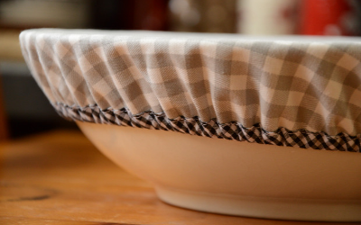
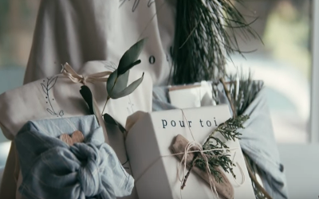
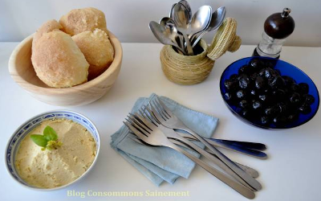

En place du film étirable et le papier aluminium, deux matériaux très polluants, on opte pour des couvercles en tissu élastiqués, qui permettront de recouvrir et protéger nos aliments dans toutes sortes de bols.
 Source : Blog Mum à contre courantLes papiers d'emballage traditionnels sont vraiment une plaie pour l'environnement. Ils ne se recyclent pas et sont lents à se décomposer. Voici un tutoriel pour production des emballages cadeau mois polluants.
 Source : Channel YouTube de Josée-Anne SCDes astuces pour réduire ses déchets dans sa salle de bain permet de faire de sacrées économies, tout en améliorant notre santé et celle de la planète !
Trois recettes simples de maquillage fait maison. Ça nous permet de bien connaître la composition du produit et aussi de réutiliser les emballages.
Avec quelques astuces, il est très facile de ne pas produire de déchet plastique en allant pique-niquer.
Couverts en plastique, assiettes jetables... les déchets peuvent rapidement s’acumuller lors des fêtes. Avec de petites astuces, il est facile de les rendre bien plus écologiques et aussi amusantes !
 Source : Blog consommons sainement